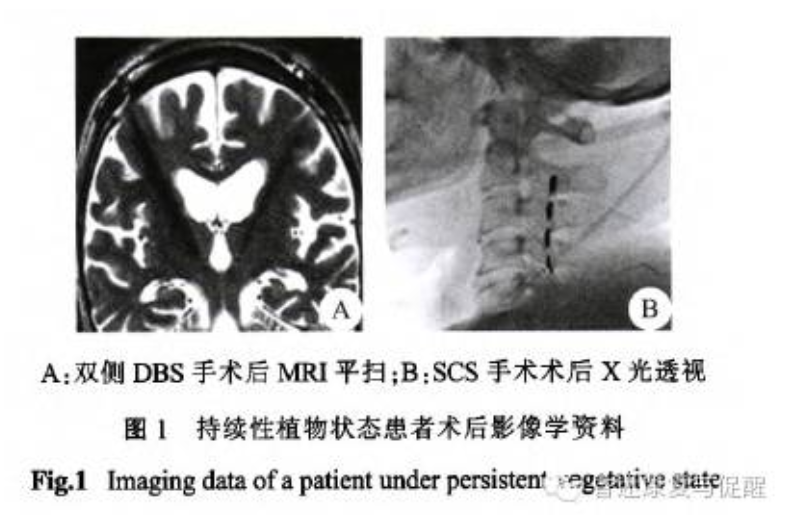
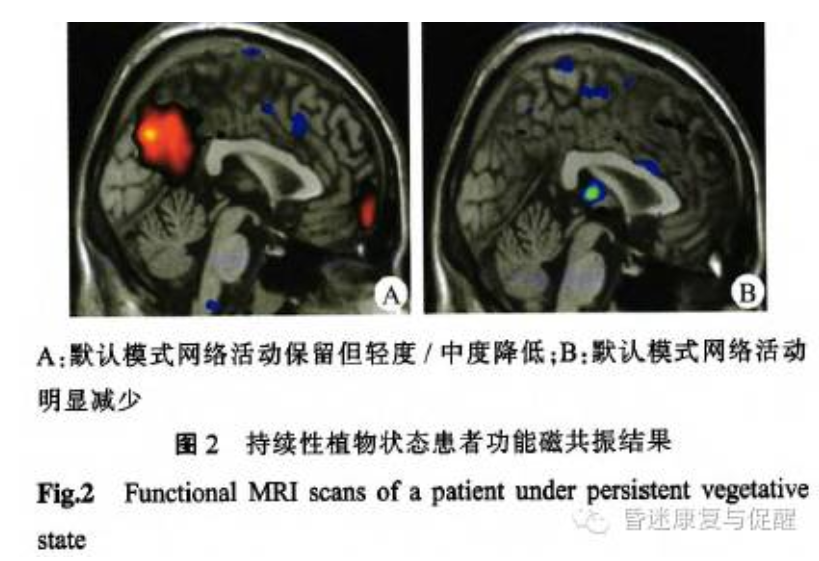

持续性植物状态的神经调控治疗之临床经验
时间：2021-03-24 来源：中国神经科学学会意识与意识障碍分会
目的与方法
探讨脑深部电刺激(DBS)和脊髓电刺激(Scs)神经调控治疗对持续性植物状态患者的促醒作用。
自2011年7月至2012年12月北京军区总医院共收治持续性植物状态患者53例，筛选后入组42例。其中男27例，女15例；平均(42.9±5.47)岁。按照患者病情及家属意愿将其分为对照组20例，手术组22例。其中手术组采用DBS治疗5例，SCS治疗17例；对照组接受手术外的常规康复治疗。采用改良的昏迷恢复量表(CRS-R)作为评估手段，部分患者接受功能磁共振做进一步评估。
结果与结论
入组时2组患者性别、年龄、患病时间及意识评定差异无统计学意义(P>0.05)。获得随访37例(对照组17例，手术组20例)，平均随访11.2月。手术组患者7例获得意识恢复，促醒率为35％； 对照组1例患者获得意识恢复，促醒率为5.9％，差异有统计学意义(P<0.05)。且手术组患者CRS-R量表评定结果明显优于对照组，差异有统计学意义(P<0.05)；DBS与SCS 治疗患者间CRS-R评分差异无统计学意义(P>0.05)。结果提示，静息态默认网络中关键脑区激活及功能连接程度与临床评定具有较好的一致性。神经调控治疗能有效促进PVS患者的意识恢复，DBS与SCS之间未发现疗效差异。

图一

图二